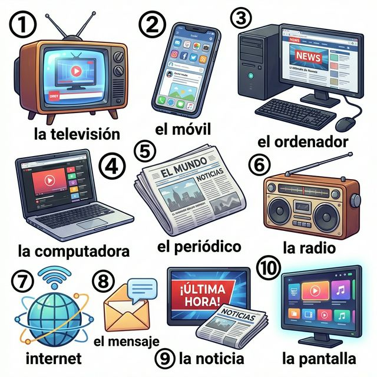
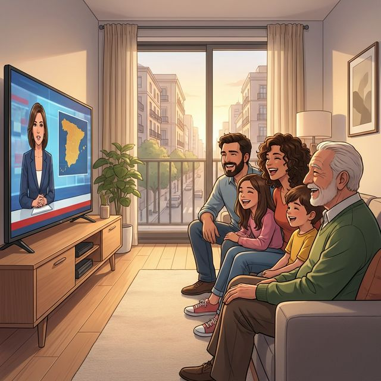

Cervantes: §9 미디어 및 §16 과학 및 기술 기초
Conectados con el mundo (세상과 연결되다)
우리는 스마트폰, 텔레비전, 인터넷을 통해 전 세계의 소식을 실시간으로 접합니다. 이제 이 연결의 도구들을 스페인어로 불러볼까요? 이번 장에서는 신문, 라디오와 같은 전통 미디어부터 인터넷과 소셜 미디어 같은 현대적 기술 어휘까지 폭넓게 다룹니다. 또한 문장을 더욱 간결하게 만들어주는 '직접 목적대명사(Direct Object Pronouns)'를 배워, "나는 그것을 알아"와 같이 세련된 문장을 구사해 봅시다.
학습 목표
- 미디어 장치, 통신 및 기초 IT 어휘 15개 이상 습득
- 직접 목적대명사(lo, la, los, las)의 위치와 활용법
- '보다(ver)', '듣다(escuchar)', '읽다(leer)' 등 미디어 활용 동사 복습
- 스페인의 대표적인 미디어 매체와 소통 방식 이해
우리를 연결해 주는 다양한 미디어 기기들입니다. 번호와 매칭되는 단어를 확인하며 필수 어휘들을 익혀보세요.

| # | Spanish | English Bridge | Korean Tip |
|---|---|---|---|
| 1 | la televisión / la tele | Television ✅ | 텔레비전 / TV |
| 2 | el teléfono móvil / el móvil | Mobile (phone) ✅ | 휴대폰 |
| 3 | el ordenador | — (To order/organize) | 컴퓨터 (스페인) |
| 4 | la computadora | Computer ✅ | 컴퓨터 (중남미) |
| 5 | el periódico | Periodical ✅ | 신문 |
| 6 | la radio | Radio ✅ (Perfect Cognate) | 라디오 |
| 7 | internet | Internet ✅ (Perfect Cognate) | 인터넷 |
| 8 | el mensaje | Message ✅ | 메시지 |
| 9 | la noticia | Notice / News (related) | 뉴스 / 소식 |
| 10 | la pantalla | — | 화면 / 스크린 |
✅ 표시된 단어는 영어와 어원의 뿌리가 같은 'Cognates'입니다.
미디어를 이용하고 기술에 대해 이야기할 때 자주 사용하는 패턴입니다.
A. 미디어 이용하기
- Veo las noticias en la tele. (I watch the news on TV. / TV로 뉴스를 봐요.)
- Escucho la radio por la mañana. (I listen to the radio in the morning. / 아침에 라디오를 들어요.)
- Leo el periódico todos los días. (I read the newspaper every day. / 매일 신문을 읽습니다.)
- ¿Tienes internet en casa? (Do you have internet at home? / 집에 인터넷 있나요?)
B. 소통과 기술
- Te mando un mensaje ahora. (I'll send you a message now. / 지금 메시지 보낼게.)
- Llamo por teléfono a mi madre. (I call my mother by phone. / 어머니께 전화를 드려요.)
- Busco información en la red. (I look for information on the web. / 웹에서 정보를 찾습니다.)
- No funciona mi ordenador. (My computer is not working. / 내 컴퓨터가 작동하지 않아.)
문장을 짧고 명확하게 만들어주는 핵심 문법인 직접 목적대명사를 알아봅시다.
문장에서 '을/를'에 해당하는 목적어를 대신합니다. 영어의 it, them과 같습니다.
| 대상 | 단수 | 복수 |
| :--- | :--- | :--- |
| 남성 (him, it) | lo | los |
| 여성 (her, it) | la | las |
위치 (MANDATORY RULE):
1. 변형된 동사 앞: Yo leo el libro. → Yo lo leo. (나는 그것을 읽는다.)
2. 동사원형/현재분사 뒤 (붙여 씀): Quiero leerlo. (그것을 읽고 싶다.) / Estoy leyéndolo. (그것을 읽고 있다.)
Korean Tip!
목적어가 사물일 때뿐만 아니라 사람일 때도 씁니다. "나(me)", "너(te)" 등도 직접 목적대명사에 포함되지만, 이 장에서는 3인칭(lo, la, los, las)에 집중해 봅시다.
스페인의 언론과 방송 문화는 어떨까요?

España tiene una rica tradición de prensa y televisión. Los periódicos más importantes son El País y El Mundo, que se leen en todo el país. En la televisión, el Telediario de TVE (Televisión Española) es una institución para los españoles. A menudo, las familias se reúnen a las 15:00 o a las 21:00 para ver las noticias mientras comen o cenan.
Hoy en día, el consumo de medios ha cambiado mucho. Los jóvenes prefieren las plataformas de streaming y las redes sociales. Sin embargo, el deporte, especialmente el fútbol, sigue siendo el contenido más visto. Los periódicos deportivos como Marca o AS son extremadamente populares y se encuentran en casi todos los bares de España. ¡La pasión por el fútbol y la información siempre van de la mano!
[한국어 번역]
스페인은 신문과 TV의 오랜 전통을 가지고 있습니다. 가장 중요한 신문은 전국적으로 읽히는 엘 파이스(El País)와 엘 문도(El Mundo)입니다. TV에서는 스페인 국영 방송(TVE)의 텔레디아리오(Telediario)가 스페인 사람들에게 상징적인 뉴스 프로그램입니다. 가족들은 오후 3시나 밤 9시에 점심이나 저녁을 먹으며 뉴스를 보기 위해 종종 모입니다.
오늘날 미디어 소비는 많이 변했습니다. 젊은 층은 스트리밍 플랫폼과 소셜 미디어를 선호하죠. 하지만 스포츠, 특히 축구는 여전히 가장 많이 시청되는 콘텐츠입니다. 마르카(Marca)나 아스(AS) 같은 스포츠 신문들은 매우 인기가 높아서 스페인의 거의 모든 바(bar)에서 찾아볼 수 있습니다. 축구에 대한 열정과 정보는 항상 함께합니다!
A. Match the action with the medium (행동과 미디어를 연결하세요)
| 좌측 (행동) | 우측 (미디어) |
|---|---|
| 1. Ver (보다) | a. El periódico (신문) |
| 2. Escuchar (듣다) | b. El teléfono (전화) |
| 3. Leer (읽다) | c. La televisión (TV) |
| 4. Llamar (전화하다) | d. La radio (라디오) |
| 5. Navegar (서핑하다) | e. Internet (인터넷) |
B. 직접 목적대명사 연습 (밑줄 친 목적어를 lo, la, los, las로 바꾸어 문장을 다시 쓰세요)
C. 번역 연습 (주어진 문장을 직접 목적대명사를 사용해 번역하세요)
Una mañana con información (정보와 함께하는 아침)
Todos los días me levanto a las siete de la mañana. Primero, enciendo la radio para escuchar las noticias mientras tomo mi café. La radio me gusta mucho porque es una compañía agradable. Después, en el metro, leo el periódico digital en mi móvil. Es muy cómodo y rápido. Mi padre prefiere el periódico de papel, él lo lee en el bar de la esquina todas las mañanas. A mediodía, mando un mensaje de WhatsApp a mis amigos para quedar. Por la noche, mi familia y yo vemos la película en la tele. Si es una película de acción, a mis hermanos les encanta y la ven con mucha atención. ¡Estamos siempre conectados!
Questions:
1. 주인공은 아침에 왜 라디오를 듣나요? (Why does the protagonist listen to the radio in the morning?)
- ............................................................
2. 주인공의 아버지는 어디에서 신문을 읽나요? (Where does the father read the newspaper?)
- ............................................................
[한국어 번역]
매일 저는 아침 7시에 일어납니다. 먼저, 커피를 마시는 동안 뉴스를 듣기 위해 라디오를 켭니다. 라디오가 즐거운 친구가 되어주기 때문에 아주 좋아합니다. 그 후, 지하철에서 제 휴대폰으로 디지털 신문을 읽습니다. 매우 편리하고 빠르죠. 제 아버지는 종이 신문을 선호하시는데, 매일 아침 길모퉁이 바(bar)에서 그것을 읽으십니다. 정오에는 친구들과 만나기 위해 왓츠앱 메시지를 보냅니다. 밤에는 가족과 제가 TV로 영화를 봅니다. 액션 영화라면 제 형제들이 정말 좋아해서 아주 집중해서 그것을 보죠. 우리는 항상 연결되어 있습니다!
¿Has visto la noticia? (뉴스 봤니?)
Situación: Javier y Carla hablan sobre una noticia importante que ha salido en los medios.
상황: 하비에르와 카를라가 미디어에 나온 중요한 뉴스에 대해 이야기합니다.
| Spanish | Korean |
|---|---|
| Javier: ¡Hola Carla! ¿Has visto la noticia de hoy? | 하비에르: 안녕 카를라! 오늘 뉴스 봤니? |
| Carla: No, no la he visto. ¿Qué ha pasado? | 카를라: 아니, 못 봤어. 무슨 일이 있었는데? |
| Javier: Hay un festival de música gratuito en el parque. | 하비에르: 공원에서 무료 음악 축제가 열린대. |
| Carla: ¡Qué bien! ¿Dónde has buscado la información? | 카를라: 대박! 어디서 정보를 찾았어? |
| Javier: La he buscado en internet, en la página del ayuntamiento. | 하비에르: 인터넷에서 찾았어, 시청 페이지에서. |
| Carla: Pásame el enlace (link), por favor. | 카를라: 링크 좀 보내줘. |
| Javier: Claro, te lo mando por WhatsApp ahora mismo. | 하비에르: 당연하지, 지금 바로 왓츠앱으로 보낼게. |
이번 장의 핵심 내용을 복습해 보세요.
- [ ] 미디어 기기와 관련된 단어 10개 이상을 알고 있나요?
- [ ] 직접 목적대명사(lo, la, los, las)를 적절한 위치에 쓸 수 있나요?
- [ ] 미디어 소통과 관련된 실생활 표현들을 익혔나요?
- [ ] 스페인의 뉴스 습관과 왓츠앱 문화에 대해 이해했나요?
¡Excelente! 오늘 여러분은 현대 사회의 핵심인 '연결'에 대해 스페인어로 소통하는 법을 배웠습니다. 직접 목적대명사를 통해 여러분의 문장은 더욱 경제적이고 세련되어졌습니다. 기술은 우리를 가깝게 만들어주지만, 그 기술을 어떤 언어로 채우느냐가 더욱 중요합니다. 다음 장에서는 우리의 소통을 더욱 깊이 있게 만들어 줄 'IT 기술, 팟캐스트 및 모던 미디어 심화(A2)' 섹션으로 이어가겠습니다. ¡Sigue conectado con el español!
6. Práctica - A. Match the action with the medium
1-c / 2-d / 3-a / 4-b / 5-e
6. Práctica - B. 직접 목적대명사 연습
1. Yo la veo. / 2. Tú los compras. / 3. Nosotros la escuchamos. / 4. Ella lo lee. / 5. Ellos las mandan.
6. Práctica - C. 번역 연습
1. Lo leo todos los días.
2. Mi madre la ve en la tele.
3. ¿Los has comprado? (또는 ¿Los compraste?)
4. Estoy escuchándolas. (또는 Las estoy escuchando.)
5. Queremos lo mucho. (주의: 동사 앞 - Lo queremos mucho.)
7. Lectura Questions
1. 즐거운 친구가 되어주기 때문에 (Porque es una compañía agradable).
2. 길모퉁이 바 (En el bar de la esquina).